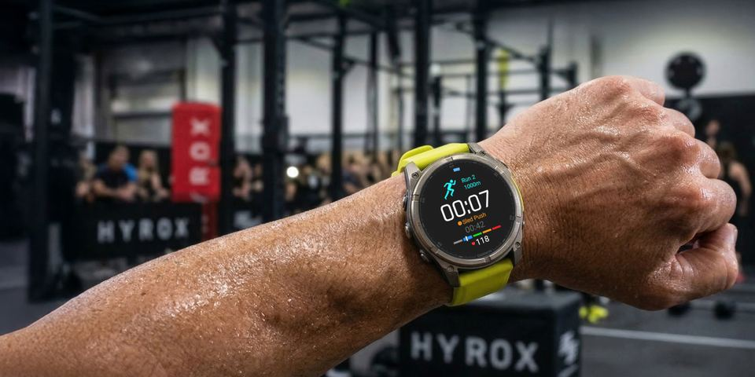

ROXZONE
Guide
FAQ
Blog
Store
My
ROXZONE

Blog
Setting up your Garmin, racing to a plan and pacing your first HYROX race.
Latest articles
Setup
21 November 2026
How to set up your Garmin for your first HYROX race
Garmin has no HYROX activity. Three ways to set your watch up for the race, what each one gives you, and who it suits.
7
min read
→
Race day
21 November 2026
How to use your Garmin on HYROX race day
Where to press LAP, what the screen shows on runs and stations, and how to race to your plan.
6
min read
→
Pacing
21 November 2026
What pace to aim for in your first HYROX race
How to choose a goal you can finish strong, how it splits across every run and station, and how to race it from your wrist.
5
min read
→